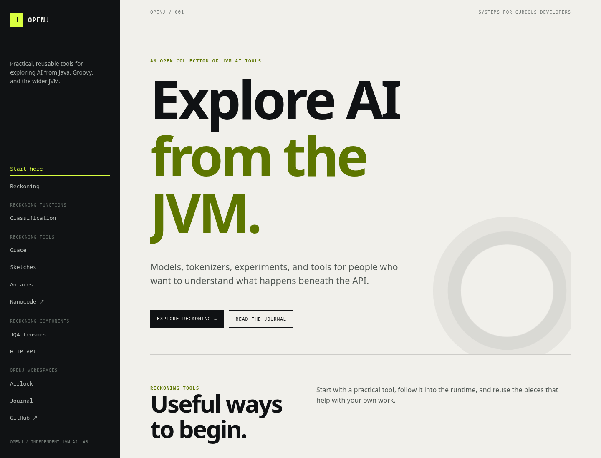

The session
We started a local server for the site, asked Chromium to load the actual index.html, and captured the rendered result. The browser did not read a design description. It saw the page as a user sees it.
python3 -m http.server 8765 --directory docs
chromium --headless --no-sandbox --disable-gpu \
--window-size=1440,1100 \
--screenshot=/tmp/openj-index-rendered.png \
http://127.0.0.1:8765/index.htmlWhat Chromium saw

Read the palette
The page uses a deliberately small palette. The contrast comes from a near-black navigation rail against an off-white canvas, with lime and olive green carrying the OpenJ signal.
Warm off-white
The main surface keeps the page quiet so the type and structure do the work.
Near-black
The sidebar and primary button create a strong frame and anchor the navigation.
Lime accent
The brightest color marks active navigation, the brand mark, and interaction states.
Olive green
The large hero emphasis and small labels use a darker signal for readable contrast.
Read the style
Chromium makes the design language obvious: a fixed left rail, oversized editorial typography, monospace metadata, thin rules, and a circular technical motif in the hero. The layout feels like a field notebook for systems work rather than a generic product landing page.
That observation is useful. A browser capture gives us a shared reference for deciding whether a new Airlock surface belongs in the same visual world, whether the mobile layout holds together, and which details should change before shipping.
Turn inspection into action
The next step is not to trust the screenshot forever. Change the CSS, render again, and compare the result. Airlock keeps the browser, source tree, and development tools together in a workspace whose mounts and permissions are explicit.
Practical payoff: the browser image turns visual QA into a repeatable command, not a hand-wavy approval at the end of a build.